Im Menüpunkt…
1 WinLine FAKT
1 Erfassen
1 Preiswartung
… können folgende Aktionen durchgeführt werden:
ü bestehende Preise warten (abändern)
ü neue Preise anlegen
ü Preise löschen
ü Preise prüfen und optional löschen
Hinweis
Sämtliche Aktionen beziehen sich auf Preise von Artikeln. Handelt es sich in der weiteren Folge um Preislistenpreise, so werden die Preistypen "0 - Preis und Rabatt" und "1 - Preis" berücksichtigt.
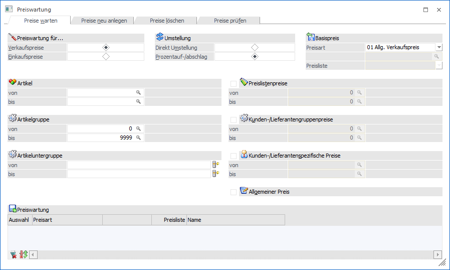
Das Fenster untergliedert sich zunächst in die folgenden Register:
ü Register "Preise warten"
Mit
Hilfe dieses Register können bestehende Preiselisteneinträge oder die
allgemeinen Preise verändert werden.
ü Register "Preise neu
anlegen"
In diesem Register können neue Preislisteneinträge erzeugt
werden.
ü Register "Preise löschen"
In
diesem Register können bestehende Preislisteneinträge gelöscht werden.
ü Register "Preise prüfen"
Mit
Hilfe dieses Register kann geprüft werden, ob es bei Artikeln überschneidende
oder mehrfach vorhandene Preislisteneinträge gibt.
Hinweis
Zwischen "Preise warten" und "Preise neu anlegen" bestehen folgende Unterschiede:
|
Preise warten |
Preise neu anlegen |
|
Bereits bestehende Preise werden durch die Preiswartung überschrieben. |
Bei einer Neuanlage werden alle vorhandenen Preislisten (auch jene, bei welchen noch keine Preise hinterlegt werden) Gruppen und Personenkonten in der Tabelle "Preiswartung" angezeigt. |
|
Sie haben nur auf jene Preislisten, Gruppen, Personenkonten Zugriff, für die bereits Preise eingegeben wurden. |
Der allgemeine Verkaufspreis und Einkaufspreis wird nicht angezeigt. |
|
Beim Preise warten, wird auch der allgemeine Einkaufspreis und Verkaufspreis angezeigt. |
Es werden nur alle Preise der Zielpreisliste gelöscht und durch die Einträge der Quelldatei ersetzt. |
|
Es werden in die Zielpreisliste nur die Preise für jene Artikel übernommen, die bereits vorher in der Quellpreisliste vorhanden waren. |
Bei der Neuanlage wird für jedes Konto die im Stamm hinterlegte Preisliste verwendet. Da in der Kundengruppe keine Preisliste hinterlegt werden kann, müssen bei der Neuanlage die Preislistennummern manuell eingegeben werden. |
|
Es kann vorkommen, dass beim Personenkonto mehrere Preislisten versorgt wurden, diese werden dann auch alle angezeigt. |
|
Die nachfolgende Beschreibung bezieht sich auf alle 4 Register, da der grundsätzlich Aufbau sehr ident ist.
Preiswartung für…
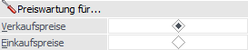
Ø Verkaufspreise / Einkaufspreise
An dieser Stelle kann definiert werden, ob Verkaufs- oder Einkaufpreise gewartet / angelegt / geprüft / gelöscht werden sollen.
Umstellung (nur bei "Preise warten" und "Preise neu anlegen")
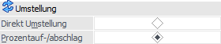
Ø Direkte Umstellung
Bei Auswahl dieser Option kann im Bereich Preiswartung - Umstellungsdaten ein fixer Basis- und Zielwert angegeben werden.
Ø Prozentuelle Umstellung
Mit Hilfe dieser Option kann der Basiswert im Bereich Preiswartung - Umstellungsdaten um einen bestimmten Prozentsatz verändern wollen.
Basispreis (nur bei "Preise warten" und "Preise neu anlegen")
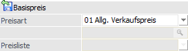
An dieser Stelle muss angegeben werden, was die Basis für die neuen / zu ändernden Preise sein soll. Die Basis gibt hierbei nicht nur den Preis vor, sondern auch Elemente wie z.B. "Rabatt", "Datumseinschränkungen", "Mengeneinschränkungen" und "Colli".
Ø Preisart
Mit Hilfe dieser Auswahlliste wird die Art des Basispreises angegeben.
ü 00 - Alter Wert (nur bei "Preise
warten")
In diesem Fall werden die zu wartenden Preislisteneinträge "selber"
als Basis genutzt.
ü 01 - Allg. Verkaufspreis / 05 -
Allg. Einkaufspreis
Als Basis wird der allgemeine Verkaufs- bzw.
Einkaufspreis verwendet. Diese Preise weisen keine weiteren Preiselemente
(Datum, Menge, Colli, etc.) auf.
ü 02 - Allg. Preislistenpreis
(Verkauf) / 06 - Allg. Preislistenpreis (Einkauf)
Als Basis wird der
allgemeine Preislistenpreis (Preisart "1 - Verkaufspreis" bzw. "11 -
Einkaufspreis" im Artikelstamm) verwendet. Die zu nutzende Preisliste muss im
Feld "Preisliste" angegeben werden.
ü 03 - Kundengruppenspez. Preis / 07
- Lieferantengruppenspez. Preis
Als Basis wird der gruppenspezifische Preis
(Preisart "2 - Kundengruppenpreis" bzw. "12 - Lieferantengruppenpreis" im
Artikelstamm) verwendet. Die zu nutzende Gruppe und die Preisliste müssen in den
nachfolgenden Feldern angegeben werden.
ü 04 - Kundenspezifischer Preis / 08
- Lieferantenspezifischer Preis
Als Basis wird der kontenspezifische Preis
(Preisart "3 - Kundenspez. Preis" bzw. "13 - Lieferantenspez. Preis" im
Artikelstamm) verwendet. Das zu nutzende Konto und die Preisliste müssen in den
nachfolgenden Feldern angegeben werden.
ü 09 - Einstandspreis / 10 - letzter
Einkaufspreis / 11 - niedrigster Einkaufspreis
Als Basis wird der
Einstandspreis / letzte Einkaufspreis / niedrigste Einkaufspreis verwendet.
Diese Preise weisen keine weiteren Preiselemente (Datum, Menge, Colli, etc.)
auf.
Ø Kundengruppe / Kunde / Lieferantengruppe / Lieferant
Abhängig von der gewählten Preisart muss hier die Gruppe oder das Personenkonto hinterlegt werden, von welchem die Preislisteneinträge genutzt werden sollen.
Ø Preisliste
Abhängig von der gewählten Preisart muss hier die zu nutzende Preisliste hinterlegt werden.
Datumseinschränkung (nur bei "Preise löschen")
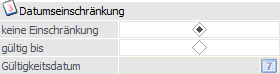
Ø Datumseinschränkung
An dieser Stelle kann eine Einschränkung auf die Gültigkeit der Preise erfolgen. Hierbei wird das "Gültigkeitsdatum" mit dem "Datum bis" der Preislisteneinträge verglichen.
Einschränkungen bei Preisen (nur bei "Preise prüfen")
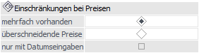
Ø Einschränkungen bei Preisen
An dieser Stelle kann die Art der Prüfung definiert werden.
ü mehrfach vorhanden
Bei
"mehrfach vorhandene Preise" handelt es sich um Preise, welche die gleiche
Artikelnummer, die gleiche Preisliste, den gleichen Preistyp, die gleiche
Preisart (ggfs. ergänzt um Konto / Gruppe) sowie den gleichen Colli aufweisen
und entweder gleiche Datumseinschränkung oder gleiche Mengenstaffel
aufweisen.
ü überschneidende Preise
Bei
"überschneidenden Preisen" handelt es sich um Preise, bei denen sich die
Datumseinschränkungen überschneiden.
ü nur mit Datumseingaben
Diese
Option kann zusätzlich zu der Auswahl "überschneidende Preise" aktiviert werden.
Dadurch werden nur jene Preise berücksichtigt, die eine Datumseinschränkung
besitzen.
Löschen (nur bei "Preise prüfen")
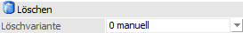
Ø Löschvariante
An dieser Stelle kann definiert werden wie mehrfach vorhandenen Preise bzw. die überschneidenden Preise bei Anwahl des Buttons "Ok" bzw. der Taste F5 gelöscht werden sollen.
ü 0 - manuell
Es wird das Fenster
Preise löschen - manuelle Selektion
geöffnet und die entsprechenden Preise angezeigt. Welche Preise gelöscht werden
sollen kann dort entscheiden werden.
ü 1 - letzte löschen
Es werden
automatisch die zuletzt erfassten Preise gelöscht, wobei sich die Reihenfolge
nach der Erfassung der Preise richtet. Der zuerst erfasste Preis bleibt
bestehen.
ü 2 - erste löschen
Es werden
automatisch die zuerst erfassten Preise gelöscht, wobei sich die Reihenfolge
nach der Erfassung der Preise richtet. Der zuletzt erfasste Preis bleibt
bestehen.
Selektion
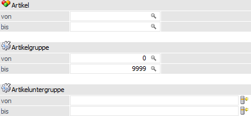
Ø Artikel von / bis
Hier kann eine Selektion anhand der Artikelnummer vorgenommen werden. Werden hier keine Grenzen gesetzt, so kommen alle Artikel in die Preiswartung.
Ø Artikelgruppen von / bis
An dieser Stelle kann eine Einschränkung anhand der Artikelgruppe der Artikel vorgenommen werden. Werden hier keine Grenzen gesetzt, so kommen alle Artikel in die Preiswartung.
Ø Artikeluntergruppen von / bis
Hier kann eine Einschränkung anhand der Artikeluntergruppe der Artikel vorgenommen werden. Werden hier keine Grenzen gesetzt, so kommen alle Artikel in die Preiswartung.
Zielpreis
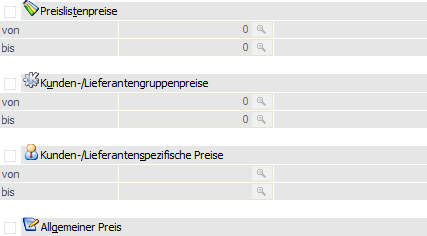
Ø Vorauswahl der Zielpreise
An dieser Stelle kann durch Aktivierung der einzelnen Bereiche definiert werden, welche Preisarten gewartet / angelegt / geprüft / gelöscht werden sollen. Neben einer grundsätzlichen Aktivierung muss im nachfolgenden "von / bis" jeweils eine Eingabe erfolgen.
Hinweis
Die Preisart "Allgemeiner Preis" steht nur im "Preise warten" zur Verfügung.
Tabelle "Preiswartung"
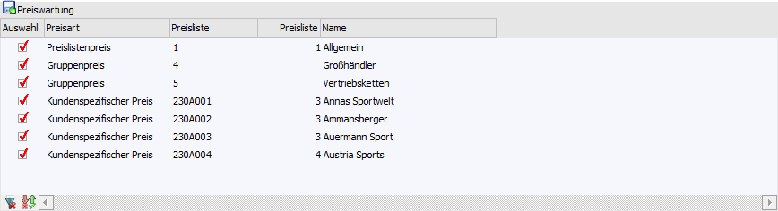
Nach Anwahl des Button "Anzeigen" wird die Tabelle mit jenen Preisarten gefüllt, die lt. Zielpreis gewartet / angelegt / geprüft / gelöscht werden sollen.
Ø Auswahl
An dieser Stelle wird definiert, welche Preisart bei der weiteren Wartung / Anlage / Prüfung / Löschung berücksichtigt werden soll.
Ø Preisart
Hier wird die Preisart angezeigt.
Ø Preisliste / Gruppe / Kontonummer
In dieser Spalte wird das Element der Preisart angezeigt.
Ø Preisliste
An dieser Stelle wird die Preisliste ausgewiesen.
Achtung
Handelt es sich um eine Neuanlage von Preisen, so muss an dieser Stelle bei Gruppenpreisen die Preisliste angegeben werden, unter welcher die Preise angelegt werden sollen.
Des Weiteren kann die Preisliste bei Konten individuell angepasst werden, wenn es sich um eine Neuanlage handelt (es wird die Preislist auf dem Personenkontenstamm vorgeschlagen).
Ø Name
In dieser Spalte wird der Name der Preisliste / Gruppe / Kontonummer angezeigt.
Tabellenbuttons
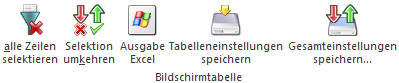
Ø alle Zeilen selektieren
Durch das Anklicken des Buttons "alle Zeilen selektieren" werden alle Zeilen in der Tabelle aktiviert.
Ø Selektion umkehren
Durch das Anklicken des Buttons "Selektion umkehren" werden alle aktivierten Zeilen deaktiviert und alle deaktivierten Zeilen aktiviert.
Ø Ausgabe Excel
Durch Anwahl des Buttons "Ausgabe Excel" wird der Inhalt der Tabelle an Microsoft Excel übergeben.
Ø Tabelleneinstellungen speichern
Die Spalten einer Tabelle können grundsätzlich an beliebige Positionen verschoben, bzw. in der Breite entsprechend angepasst werden. Durch Anwahl des Buttons "Tabelleneinstellungen speichern" werden die Einstellungen benutzerspezifisch gespeichert und bei dem nächsten Aufruf des Programmpunktes wieder vorgeschlagen.
Ø Gesamteinstellungen speichern
Im Gegensatz zu "Tabelleneinstellungen speichern" können mit "Gesamteinstellungen speichern" mehrere Tabellenaufbauten gespeichert und nach Wunsch geladen werden. Zusätzlich werden Sonderfunktionen der Tabelle (z.B. "Spalte gruppieren") ebenfalls bei der Speicherung bedacht.
Buttons
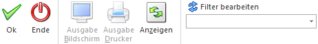
Ø Ok
Durch Anwahl des Buttons "OK" bzw. der Taste F5 werden je nach Register unterschiedliche Aktionen gestartet. Grundvoraussetzung hierfür ist allerdings, dass in der Tabelle "Preiswartung" Zieleinträge ausgewählt wurden.
ü Register "Preise warten"
Es
wird in den Bereich Preiswartung -
Umstellungsdaten gewechselt. Dort können die Umstellungsdaten angegeben
werden.
ü Register "Preise neu
anlegen"
Es wird in den Bereich Preiswartung - Umstellungsdaten
gewechselt. Dort können die Daten für Grunddaten für die neuen Preise angegeben
werden.
ü Register "Preise löschen"
Gemäß
der zuvor getroffenen Einstellungen werden die Preise, nach einer
Sicherheitsabfrage, gelöscht.
ü Register "Preise prüfen"
Gemäß
der zuvor getroffenen Einstellungen werden die Preise automatisch oder manuell
gelöscht. Eine Liste der überschneidenden oder mehrfach vorhandenen Preise kann
per Button "Ausgabe Bildschirm" bzw. "Ausgabe Drucker" ausgegeben werden.
Ø Ende
Durch Anwahl des Buttons "Ende" bzw. der Taste ESC wird das Fenster geschlossen und alle getätigten Eingaben verworfen.
Ø Ausgabe Bildschirm (nur bei "Preise löschen" und "Preise prüfen")
Mit Hilfe des Buttons "Ausgabe Bildschirm wird die Liste der überschneidenden / mehrfach vorhandenen / zu löschenden Preise am Bildschirm ausgegeben. Grundvoraussetzung hierfür ist allerdings, dass in der Tabelle "Preiswartung" Zieleinträge ausgewählt wurden.
Ø Ausgabe Drucker (nur bei "Preise löschen" und "Preise prüfen")
Durch Anwahl des Buttons "Ausgabe Drucker" wird die Liste der überschneidenden / mehrfach vorhandenen / zu löschenden Preise am Drucker ausgegeben. Grundvoraussetzung hierfür ist allerdings, dass in der Tabelle "Preiswartung" Zieleinträge ausgewählt wurden.
Ø Anzeigen
Nach Drücken des Buttons "Anzeigen" wird die Tabelle "Preiswartung" gemäß der zuvor getroffenen Selektion bzw. den getroffenen Einstellungen mit den Zieleinträgen gefüllt.
Ø Filter bearbeiten
Durch Anklicken des Buttons "Filter bearbeiten" kann die Einschränkung der umzustellenden Artikel bzw. Preise nach frei definierbaren Kriterien erfolgen. D.h. der Filter bezieht sich immer auf die Zielpreise.
Hinweis
Damit ein angelegter Filter in allen Registern genutzt werden kann, stehen immer die identischen Filterkriterien ("Artikelview" und "Preisliste") zur Verfügung. Da es im Register "Preise neu anlegen" für die Zielpreise noch gar keine Einträge in der Tabelle "Preisliste" gibt, werden diese Filterkriterien automatisch ignoriert.